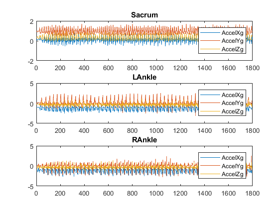
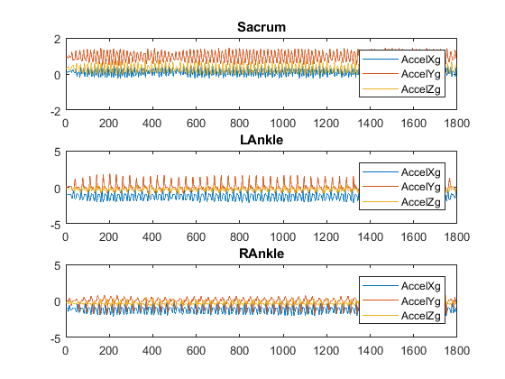
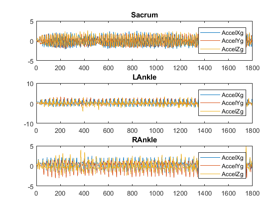
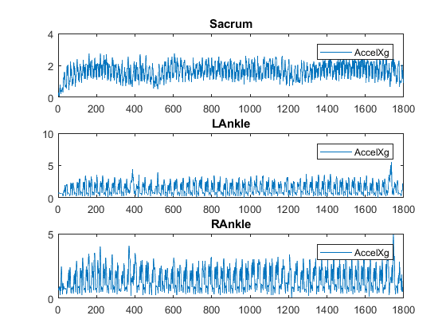
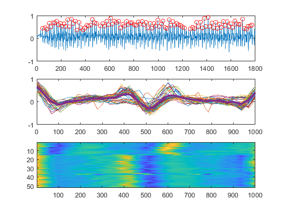
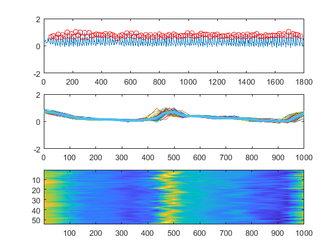
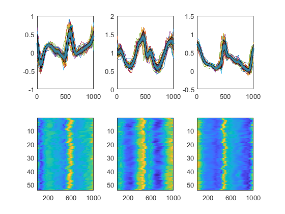
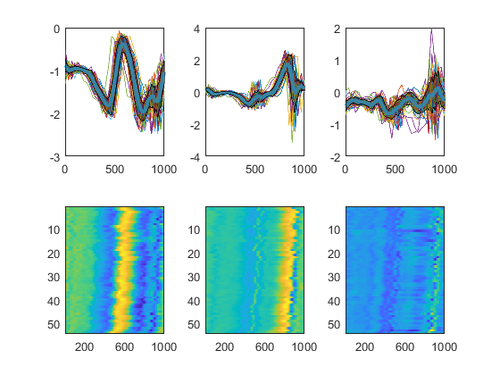
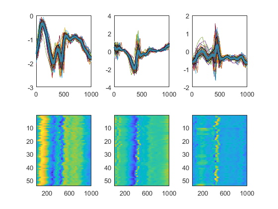
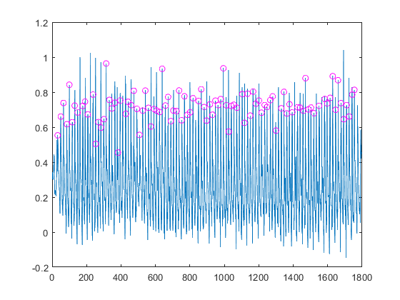

Contents
- Ami's Find Gait Cycle script
- 1. Load data
- Pre-process: Aggregate the multiple sensors into a single data structure (cell)
- 3. Raw Data inspection
- 4. Filter data
- 5. Normailse data
- 6. Resultant data
- 7a. Select signal for cycle analysis (bad example)
- 7b. Select signal for cycle analysis (good example)
- 8. Use the partition indices to partition the dataset
- 9. Use mean cycle for data partitioning
- 10. Use random cycle for data partitioning
Ami's Find Gait Cycle script
This script demonstrates the steps for segementing a multi modal signal to its basic signal cycle. Whilst the demonstration is on gait cycle from IMU signals, it can be applied to any other time series signal Author: Ami Drory, January 2019 The code is provided as is with no performance guarantees of any kind It is expected that authorship is appropriately attributed
% Generic breakdown of the steps: % 1. Load data. Note that the data structure is a Matlab Table structure. % Joe Lee provided the data in this format to this point. % 2. TODO: pre-process signal to remove duplicates using Megan O'brien % (a.k.a "Chief O'Brien") code % 3. Raw Data inspection % 4. Filter data. Here 4th order Butterworth is used. % 5. Normailse data % 6. Resultant data. For 3D acc data it is worth inspecting what the % resultant looks like. This helps to choose which channel to use for % cycle segmentation % 7. Select signal for cycle analysis % 8. Use the partition indices to partition the dataset % 9. Use mean cycle for data partitioning clear all dataPath = '\\FS2.smpp.local\RTO\Inpatient Sensors -Stroke\Data analysis\Analysis_ActivityRecognition'; addpath(dataPath);
1. Load data
load('walkingsacrum.mat'); load('walkingleftankle.mat'); load('walkingrightankle.mat'); % load('stairusacrum.mat'); % load('stairdnleftankle.mat'); % load('stairdnrightankle.mat');
Pre-process: Aggregate the multiple sensors into a single data structure (cell)
[TODO:] All previous steps can be combined into a single pre processing step
Site = {'Sacrum';'LAnkle';'RAnkle'};
Acc = {walkingsacrum; walkingleftankle; walkingrightankle};
% Acc = {stairdnsacrum; stairdnleftankle; stairdnrightankle};
3. Raw Data inspection
figure('Name','Raw Data'), rawData = table(Site,Acc); numSites = size(rawData,1); for siteInd = 1:numSites subplot(numSites,1,siteInd); plot(table2array(rawData.Acc{siteInd,1})); legend(rawData.Acc{siteInd,1}.Properties.VariableNames); title(rawData.Site{siteInd,1}); end
4. Filter data
[b,a]=butter(4,0.3); figure('Name','Filtered Data'), for siteInd = 1:numSites subplot(numSites,1,siteInd); rawData.FilteredAcc{siteInd,1} = filtfilt(b,a,table2array(rawData.Acc{siteInd,1})); plot(rawData.FilteredAcc{siteInd,1}); legend(rawData.Acc{siteInd,1}.Properties.VariableNames); title(rawData.Site{siteInd,1}); end
5. Normailse data
figure('Name','Normalised Data'), for siteInd = 1:numSites subplot(numSites,1,siteInd); filteredData = rawData.FilteredAcc{siteInd,1}; rawData.NormalisedAcc{siteInd,1} = (filteredData-mean(filteredData,1))./std(filteredData,0,1); plot(rawData.NormalisedAcc{siteInd,1}); legend(rawData.Acc{siteInd,1}.Properties.VariableNames); title(rawData.Site{siteInd,1}); end
6. Resultant data
In some instances it make sense to partition based on the resultant of the 3D channels. It therefore makes sense to inspect the resultant. The Chief O'Brien and I have discussed this previously with no conclusion as yet.
figure('Name','Resultant Data'), for siteInd = 1:numSites subplot(numSites,1,siteInd); rawData.ResultantData{siteInd,1} = sqrt(sum(rawData.NormalisedAcc{siteInd,1}.^2,2)); plot(rawData.ResultantData{siteInd,1}); legend(rawData.Acc{siteInd,1}.Properties.VariableNames); title(rawData.Site{siteInd,1}); end
Warning: Ignoring extra legend entries. Warning: Ignoring extra legend entries. Warning: Ignoring extra legend entries.
7a. Select signal for cycle analysis (bad example)
This example shows what happens when the wrong channel is selected for the signal partitioning. Note the break in the colored plan view
siteInd = 1; % Sacrum signalInd = 1; % Acc_x tempData = rawData.Acc{siteInd,1}{:,signalInd}'; timeVector = [1:size(tempData,2)]; % Detect cycles - Heuristic based at this stage MinPeakProminence = 0.4; MinPeakDistance = 9; [pks,locs,w,p] = findpeaks(tempData,timeVector,'MinPeakDistance',MinPeakDistance,... 'MinPeakProminence',MinPeakProminence,... 'Annotate','extents'); figure('Name','Detected Cycles'), subplot(311), plot(tempData); hold on plot(locs,tempData(locs),'or'); hold off % gait locs gaitLocs = locs(1:2:end); % n = 1000; numCycles = size(gaitLocs,2)-1; itnerpCycleData = zeros(numCycles,n); for cycleInd = 1:numCycles nData = gaitLocs(cycleInd+1)-gaitLocs(cycleInd); itnerpCycleData(cycleInd,:) = interp1(1:nData,... tempData(1,gaitLocs(cycleInd):gaitLocs(cycleInd+1)-1),... linspace(1, nData, n), 'linear') ; end subplot(312); plot(itnerpCycleData'); hold on plot(mean(itnerpCycleData,1),'linewidth',3); hold off; subplot(313); imagesc(itnerpCycleData);
7b. Select signal for cycle analysis (good example)
This example shows a good partitioning selection Important: Superpositioning the cycles over each other requires same length vectors for each cycle. Here, I use the simplest method of data interpolation to a vector of size n. This works very well for highly repeatable cycles suc as for normal populatioin. Not sure how this will work yet for the people with disorders/ disease. [TODO:] We should attempt to try replacing this stage with using Dynamic Time Warping (DTW).
siteInd = 1; % Sacrum signalInd = 3; % Acc_z tempData = rawData.Acc{siteInd,1}{:,signalInd}'; timeVector = [1:size(tempData,2)]; % Detect cycles - Heuristic based at this stage % Further comments: at this point the criteria for cycle partinining is % based on heuristics of min peak prominance and min peak distance. This % works well for the current signals, but [TODO:] we should learn those % parameters from the data after we have done this for a larger set of our % data MinPeakProminence = 0.4; MinPeakDistance = 9; [pks,locs,w,p] = findpeaks(tempData,timeVector,'MinPeakDistance',MinPeakDistance,... 'MinPeakProminence',MinPeakProminence,... 'Annotate','extents'); figure('Name','Detected Cycles'), subplot(311), plot(tempData); hold on plot(locs,tempData(locs),'or'); hold off % gait locs gaitLocs = locs(1:2:end); % n = 1000; numCycles = size(gaitLocs,2)-1; itnerpCycleData = zeros(numCycles,n); for cycleInd = 1:numCycles nData = gaitLocs(cycleInd+1)-gaitLocs(cycleInd); itnerpCycleData(cycleInd,:) = interp1(1:nData,... tempData(1,gaitLocs(cycleInd):gaitLocs(cycleInd+1)-1),... linspace(1, nData, n), 'linear') ; end subplot(312); plot(itnerpCycleData'); hold on plot(mean(itnerpCycleData,1),'linewidth',3); hold off; subplot(313); imagesc(itnerpCycleData);
8. Use the partition indices to partition the dataset
Important: Note the mean cycle is marked in bold. If you zoom into the graphs, you will note greyed standard deviatioin curves. The mean and standard deviation curves are features that we can learn to train our models. Keep them.
for siteInd = 1:size(Site,1) siteData = table2array(rawData.Acc{siteInd,1})'; timeVector = [1:size(siteData,1)]; itnerpCycleData = zeros(numCycles,n,size(siteData,1)); figure, for signalInd = 1:3 signalData = siteData(signalInd,:); for cycleInd = 1:numCycles nData = gaitLocs(cycleInd+1)-gaitLocs(cycleInd); itnerpCycleData(cycleInd,:,signalInd) = interp1(1:nData,... siteData(signalInd,gaitLocs(cycleInd):gaitLocs(cycleInd+1)-1),... linspace(1, nData, n), 'linear') ; end x = linspace(1, size(itnerpCycleData,2),size(itnerpCycleData,2)); cyclesMean = mean(itnerpCycleData(:,:,signalInd),1); cyclesStd = std(itnerpCycleData(:,:,signalInd),1); meanPlusSTD = bsxfun(@plus, cyclesMean, cyclesStd); meanMinusSTD = bsxfun(@minus, cyclesMean, cyclesStd); subplot(2,3,signalInd), plot(itnerpCycleData(:,:,signalInd)'); hold on plot(cyclesMean,'linewidth',3); plot(x, meanPlusSTD, 'y'); plot(x, meanMinusSTD, 'y'); fill( [x fliplr(x)], [meanPlusSTD fliplr(meanMinusSTD )], 'k'); alpha(.3); hold off; subplot(2,3,signalInd+3), imagesc(itnerpCycleData(:,:,signalInd)); rawData.interpCycles{siteInd,1} = itnerpCycleData; rawData.meanCycle{siteInd,1} = shiftdim(mean(itnerpCycleData,1),1); end end  
9. Use mean cycle for data partitioning
This is an attempt to use the mean cycle as the target and DTW for partitining of new data to simulate the pipeline once those parameters are learnt. Currently the outcome is not accurate enough, but once those parameters are learnt, it should perform well for our needs.
siteInd = 1;
signalInd = 3;
siteData = table2array(rawData.Acc{siteInd,1})';
signalData = siteData(signalInd,:)';
templateData = rawData.meanCycle{siteInd,1}(:,signalInd);
%
avgStrokeLength = 30;
stepSize = ceil(size(templateData,1)/avgStrokeLength);
downScaledTemplate = templateData(1:stepSize:end);
% basic_DTW(signalData, downScaledTemplate, 0.8, 0.8);
[istart,istop,dist] = findsignal(signalData, downScaledTemplate,...
'MaxNumSegments',100,...
'TimeAlignment','dtw','Metric','absolute');
figure,
plot(signalData); hold on
plot(istart,signalData(istart),'mo'); hold off
 10. Use random cycle for data partitioning
This is an attmept to use any random cycle as target with DTW for partitining. The approach worked well for colleagues and I on Rowing data.
siteInd = 1;
signalInd = 3;
randomCycleInd = randi(numCycles);
siteData = table2array(rawData.Acc{siteInd,1})';
signalData = siteData(signalInd,:)';
templateData = siteData(signalInd,gaitLocs(cycleInd):gaitLocs(cycleInd+1)-1);
addpath('C:\Users\adrory\Documents\myMatlabScripts\DTW_FAU\DTW');
% basic_DTW(signalData, downScaledTemplate, 0.5, 0.5);
[istart,istop,dist] = findsignal(signalData, downScaledTemplate,...
'MaxNumSegments',100,...
'TimeAlignment','dtw','Metric','absolute');
figure,
plot(signalData); hold on
plot(istart,signalData(istart),'mo'); hold off
Warning: Name is nonexistent or not a directory: C:\Users\adrory\Documents\myMatlabScripts\DTW_FAU\DTW